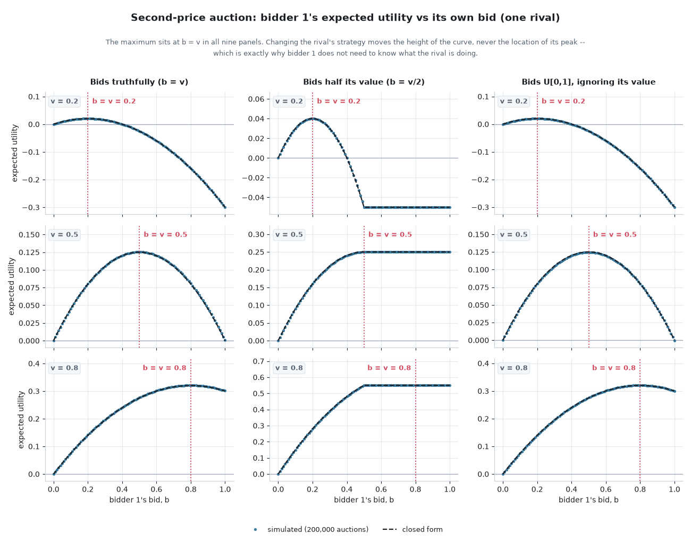
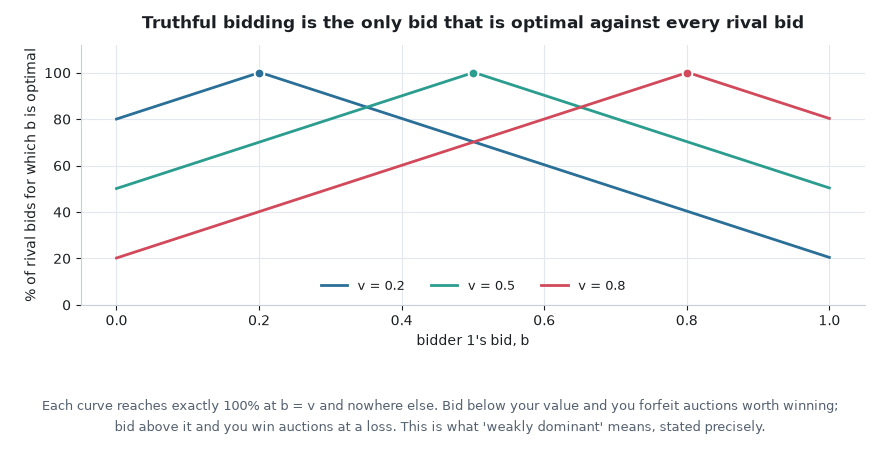
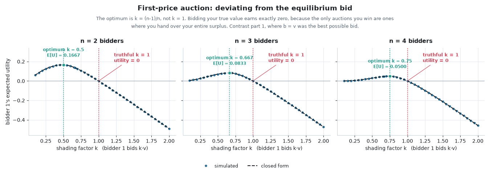
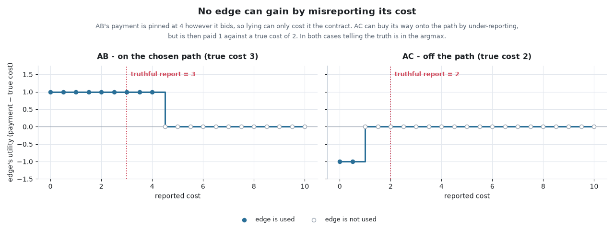

You know what it's worth. What do you bid?
Pick a mechanism and a bid, then run the auctions. The same rival draws are replayed against honest bidding, so you always see what telling the truth would have earned on exactly the run you just played. In one of these mechanisms you cannot beat it. In the other, honesty earns you nothing at all.
Mechanism
Seed
Simulated live in your browser with a seeded generator, the same method as the repository's Python. The dashed line is the exact expected utility, derived by hand.
First 10 auctions of this run
Second-price pay the runner-up
Your bid decides whether you win; the price you pay is someone else's
bid. Raising your bid above your value only buys auctions that lose money. Lowering it
only forfeits auctions you'd have profited from. Nothing you can do beats
b = v.
First-price pay your own bid
Now your bid sets the price too. Bidding your true value means winning only when you
hand over everything the item was worth, for a profit of exactly zero. Everyone shades down, and
the equilibrium lands at k = (n−1)/n.
Eight agents, one path to buy
Every edge in this network is an agent with a private cost, and we need a route from A to F. VCG picks the cheapest path and pays each edge its marginal contribution: what the best route would have cost without it, minus the cost of the rest of the route chosen. Pick an edge, make it lie, and watch what it earns.
Lying edge
Dijkstra and the VCG payment rule run live here. Every other edge reports honestly.
On the path
AB's payment is pinned at 4 whatever it reports, because the formula contains only other agents' costs. Lying can only lose it the contract.
Off the path
AC can buy its way on by reporting under 1, and is then paid 1 against a true cost of 2. The only way to win is to win at a loss.
Equal cost, unequal pay
BE and EF both cost 1, yet EF is paid 3 and BE only 2. VCG prices market power: the network without EF is worse than the one without BE.
Results
Every figure below pairs a 200,000-auction simulation with a closed form derived by hand. The dots are simulated, the dashed line is the formula. They agree to within 0.0016.
Second-price: the peak never moves
b = v, across three
values and three different rival strategies.

Against a single fixed rival bid, truthfulness is optimal but rarely unique: 40 to 90 bids on the grid tie for best. It only becomes the unique answer once you ask which bid works against every rival bid at once:

b = v and nowhere else. That is
what weakly dominant means, stated precisely.First-price: honesty earns nothing
n,
while still winning 44–75% of the auctions you enter.
| n bidders | Equilibrium k | Simulated optimum | E[U] at optimum | E[U] at truthful k=1 |
|---|---|---|---|---|
| 2 | 0.5000 | 0.5000 | 0.166667 | 0 |
| 3 | 0.6667 | 0.6667 | 0.083333 | 0 |
| 4 | 0.7500 | 0.7500 | 0.050000 | 0 |
The simulated optimum lands on the exact equilibrium (n−1)/n for all three, and
the peak equals 1/(n(n+1)) exactly.

k = (n−1)/n, not at k = 1.…and the winner always overpays
| n bidders | Could have paid less | Mean overpayment | Share of winning bid |
|---|---|---|---|
| 2 | 100.00% | 0.1664 | 49.9% |
| 3 | 100.00% | 0.1665 | 33.3% |
| 4 | 100.00% | 0.1502 | 25.0% |
The fraction is ~100% by construction: bids are continuous, so the winner almost surely strictly outbid the runner-up. The size of the gap is the informative number, and in a second-price auction it is zero by definition. That is the entire design argument for charging the runner-up's bid.
VCG: the textbook, reproduced exactly
| Edge | True cost | On path | Best path without it | Payment | Profit |
|---|---|---|---|---|---|
| AB | 3 | yes | ACEF (6) | 4 | 1 |
| BE | 1 | yes | ACEF (6) | 2 | 1 |
| EF | 1 | yes | ABDF (7) | 3 | 2 |
| AC, BD, CE, CF, DF | - | no | ABEF (5) | 0 | 0 |
VCG is not free: it pays out 9 for a path that truly costs 5. That gap is the price of strategyproofness, and the reason VCG is not budget-balanced in procurement.

How it works
A Monte Carlo that is only checked against another Monte Carlo can be confidently wrong. Every simulated quantity here has an analytic counterpart derived by hand, and the tests assert against those rather than against stored snapshots.
The closed forms
With k rivals each bidding uniformly on [0, s] and
t = min(b, s), the second-price expected utility is
The derivative changes sign exactly at b = v. That is the proof, and the
simulation is only there to confirm it. For the first-price auction with
c = (n−1)/n:
Choices worth naming
- Common random numbers. One block of rival draws is reused across every bid on the grid. Each estimate stays unbiased while differences between neighbouring bids get far less noisy, so the shape of the curve is pinned down much more precisely at equal cost. The playground above does the same, which is why the counterfactual is a fair comparison rather than two separate runs.
- Argmax sets, not a single argmax. Where many bids tie, the code reports all of them. Collapsing to one would make these mechanisms look more sharply truthful than they are.
- Explicit tie-breaking. The network has genuine ties (ABDF and ACF both cost 7), so Dijkstra breaks them on the lexicographically smallest node sequence rather than leaving it to dictionary ordering.
- Grid resolution. The shading grid unions in the exact factors
(n−1)/n. On a plain 0.05 grid,2/3is simply absent and the n = 3 optimum would read as 0.65, a grid artifact, not a result. - Reproducible to the byte. CI reruns the pipeline and fails if any committed number moves. Figures are excluded on purpose: matplotlib rasterises text through the platform font stack, so the same plot built on macOS and on Linux differs in bytes while being the same picture.
Running it
103 tests across the three mechanisms, all asserting against exact theory. The textbook is not redistributed in the repository.
Reference
Y. Shoham and K. Leyton-Brown, Multiagent Systems: Algorithmic, Game-Theoretic, and Logical Foundations, Cambridge University Press, chapter 7, with Figure 7.3 and the worked VCG example in §4.2.